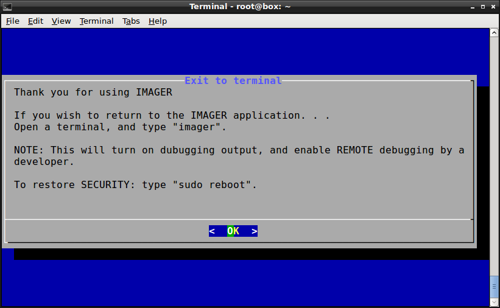

IMAGER -- Duplicate and Resize SD Cards
- Completely menu-driven
- Boots on older Windows machines (MBR boot) as well as newer UEFI bios loaders.
- Uses Windows (XP, Windows 7, 8, 10) hard disk partitions for storage.
- Uses SD card reader on laptop, if present.
- Menu navigation is non-destructive, until you confirm an action, and change the default.
How to Get Started
- Ensure that the Bios on laptop is set to boot from USB first, if the USB is present. (Often the f2, f10, f12, or del keys, when pressed early in the boot process, will bring up the Bios settings screen).
- Depending on differences between Bios versions, it may be necessary to remove your source, or destination, SD cards during the early boot time.
- Download IMAGER from http://download.iiab.io/packages/imager (the most recent .img file).
- Use the linux dd, etcher, or win32diskimager to copy this image file to a USB stick (the same process you use to copy rpi images to a SD card).
- Insert the USB stick into a Windows laptop, and turn on the power.
- Up, down arrows change the selection
- Left, right arrows (and tab), change the action choices at the bottom
- Enter acts on the currently displayed selection with the displayed action
- Backspace erases on the fill-in-the-blank screen. (tab cycles between fields, and actions at bottom.
- Use great care to keep track of which SD card is which. Whenever I remove a microSD from a Raspberry Pi, I place it in a standard-size carrier, and put a label on the contact side.
- You do not want to accidentally copy the contents of an older SD card onto the one which has the most recent updates.
- There is a file inside of each IIAB image which has much information. Use the "< info >" tab (middle bottom) if ever you are unsure about the identity of an SD card.
Copy2SD -- Copy to SD Card (DESTROYS ALL DATA ON TARGET)
- The runtime-date and the install-date values may help sort out any confusion.
- On a Windows laptop with an internal SD slot, the SD device will probably start with mmcblk0.
- SD card adapters will have sdc, sdd, sde names.
- The internal hard disk on a Windows laptop will probably start with "sda".
- Copying from mmcblk0 to sdc is the shortest path, and quickest way to obtain a copy.
Copy2disk -- Copy to Hard Disk
- Sometimes the destination SD card is slightly smaller than the source, and the only way to make a successul copy is to first make a copy onto the hard disk, make that image smaller, and then copy the smaller version onto the new SD. (This is less error-prone, if you use a SD USB adapter -- though if you are careful, you can remove the source, and copy from the hard disk image, to the mmcblk slot which you earlier used as the source.)
- The "smaller", "image2sd", and "delete" commands use as default the hard drive chosen by this command. So if you want to change the default, use this command, and cancel out after choosing the hard disk device.
Smaller -- Reduce the Size of the Hard Disk Image
- Confirm that the reduced image size is the desired operation.
hdisk2sd
- After the image is written to the laptop hard disk, optionally reduced in size, it can be written to a destination SD card.
- Imager is written to enable the SD reader which is often available on laptops. MicroSD cards are usually purchased along with a standard sized SD carrier/adapter (on the left in the next image).
- I discovered that when I wrote to the SD card holder on my laptop using the carrier (identified as an mmcblk0 device) the speed was 2.7MB per second. Writing to the same card in a USB adapter (shown below -- the right two devices), the speed was 13.4MB/s. So there may be some motivation to use the USB adapters.
Exit to Command Line Terminal
- This option brings up a informational screen which explains how to enable debugging and remote developer access. 
- Debugging Imager, in all the different Windows machines that might be encountered, is a difficult task.
- VPN (virtual private networks) can be enabled (default=off) so that the developer can diagnose problems encountered by early adopters. This is achieved by exiting from the default (at boot time) Menu, and then typing "imager" at the terminal command line (to display a terminal, click on the icon of a terminal at bottom right of the screen).
- VPN access to Imager normally only lasts until the next reboot.
- VPN access can be made to survive reboots by typing "sudo filetool.sh -b", after starting IMAGER from the command line.
- Verify that the VPN is actually working by looking for the "tun0" response to "sudo ip a" terminal command.